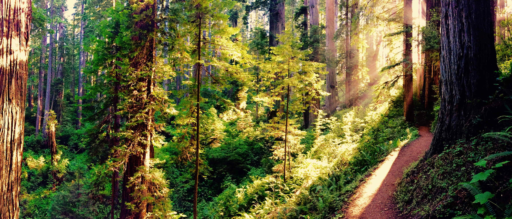

In the Redwood forest...
I realized the importance of photosynthesis.

Breathing air in the forest
I felt a profound connection to the forests.
The air, filled with oxygen, became a realization that I had always taken for granted.
What would life be like without forests, ferns, mosses, grasses, and all the green life that sustains us?
The idea of them disappearing, and their photosynthesis stopping, left me with a deep awareness of how vital it is.
Without photosynthesis, the source of our oxygen, we would cease to exist.
Realizing this in the Redwood forests sparked my curiosity about photosynthesis.
Though I knew little, it felt vital to understand. This led me to determine my path as a scientist,
studying the mysteries of this essential process and the many questions still unanswered.
It was the year 2000, and the trail in the forest had led me to this moment of discovery.
The forest had awakened a sense of wonder and a desire to learn more about the wonders of the world around me.
Looking at sky and beyond space... Still seeing Photosynthesis.

We need it wherever we go
Light is vital for photosynthesis. It harnesses the energy from light—how amazing!
Looking up at the stars, it’s a delightful thought to wonder if photosynthesis is happening somewhere out there,
powered by the light from distant stars. In the universe, hydrogen (H), oxygen (O), carbon (C), and sulfur (S) are common elements,
and that's all you need to kick-start photosynthesis in some forms. It’s a miracle that photosynthesis began on Earth around 3.5 billion years ago.
And if it happened here, it’s not far-fetched to think it might be happening elsewhere in the universe, on planets like Earth, bathed in the light of their own stars!
But as we venture into space, we must remember: photosynthetic organisms are not just relics of Earth’s past—they are absolutely crucial for our future.
Their role in providing oxygen, food, and materials is irreplaceable.
The harsh truth is this: if we allow these vital organisms to disappear from our planet, we lose something that took billions of years to evolve.
The Sun will continue to shine for billions more years, but the life forms that depend on photosynthesis—our life support—are not infinite.
If we deplete them, we cannot simply recreate that process from scratch.
As we set our sights on the stars, we must also turn our gaze back to Earth and safeguard the ecosystems that sustain us.
If we are to survive in space, we must first learn to protect and nurture the very processes that make life possible.
The balance of photosynthesis is not merely an Earthly concern—it is a matter of life itself, for us and for future generations.
The time to act is now. Without photosynthetic organisms, we don’t just lose food and oxygen—we lose the very foundation of life itself, here and beyond.